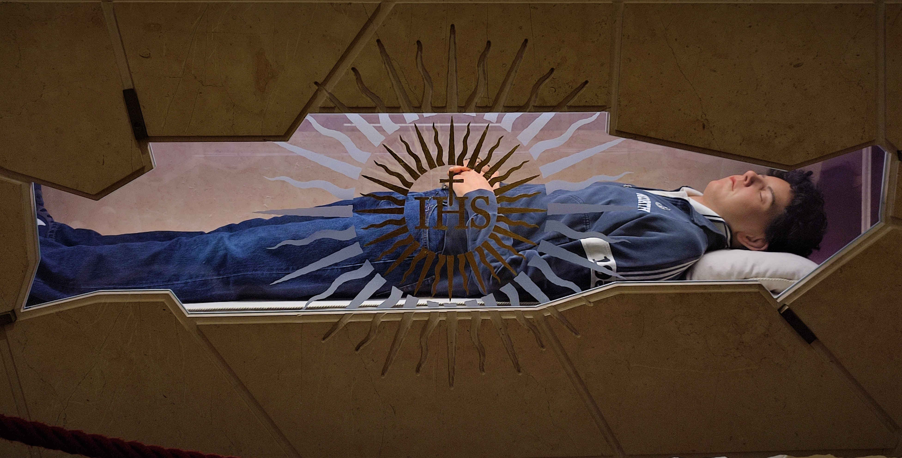

Biografia
Carlo nasceu em Londres no dia 3 de maio de 1991. Seu batismo ocorreu duas semanas após seu nascimento. Ainda em novembro daquele mesmo ano, seus pais, Antonia Salzano e Andrea Acutis, que eram originários da Itália, decidiram valtar para Milão, onde carlo cresceu.
Em 1997, Carlo começou a frequentar o Intituto Marcelline Tommaseo, onde já demostrava curiosidade e seu interesse pela fé católica. Aos sete anos de idade, Carlo foi autorizado a receber a primeira comunhão antes do tempo, devido a sua profunda devoção e maturidade. Era um comungande frequente e foi crismado 5 anos depois.
Carlo sempre foi um menino de bom coração, espalhando sua bondade e alegria por onde passava. Também possuía um forte interesse pela ciência da computação desde muito novo. Então, além das suas atividades escolares, ele estudava linguagens de programação de forma independente. aos 11, já era capaz de criar páginas web sozinho. E aos 14, trabalhou como voluntário desnevolvendo um site para a paróquia Santa Maria Sagreta.
Usando seu conhecimento em tecnologia, Carlo criou um site para catalogar milagres eucarísticos em 2004 e trabalhou nele até o ano de 2006.
Em outubro do mesmo ano, após Carlo relatar sangue na urina, foi diagnosticado com leucemia promielocítica aguda. Carlo foi internado no Hospital San Geraldo, em Monza, ele era um menino tão gentil e amoroso que fazia questão de pedir a enfermera que não acordasse seus pais quando fosse realizar os devidos cuidados, pois, segundo ele, já estavam muito preocupados. Apesar de receber intensos cuidados, seu quadro clínico agravou e Carlo Acutis veio a falecer de leucemia fulminante em 12 de outubro de 2006, aos 15 anos.
No sexto aniversário de sua morte, em outubro de 2012, foi aberto uma petição para o processo de sua beatificação, a Conferência Episcopal Lombardiana aprovou o pedido, foi então que todo o processo de investigação diocesana começou e ocorreu entre 2013 e 2016. Em 2018 o Papa Francisco confirmou que Carlo havia praticados em sua vida as virtudes cristãs de forma heróicas e foi considerado digno de estima e honra. Um ano depois, foi reconhecida a ocorrência de um milagre atribuído a intercessão de Carlo. Esse caso ocorreu no Brasil e após um longa investigação, o caso foi aprovado. levando a sua beatificação. Por conseguinte, o Papa reconheceu o segundo milagre no ano de 2022, sendo essa a porta de entrada para sua canonização que ocorreu no dia 7 de setembro de 2025.
Legado
Carlo Acutis é lembrado por sua profunda fé e pelo uso da tecnologia para compartilhar sua paixão pelo cristianismo.
Ele é considerado um exemplo para os jovens, com seu jeito simples e carinhoso que encantava todos à sua volta. Carlo sempre gostou de ajudar a todos e demonstrava amor até para aqueles que menos o amava.
Era um garoto comum, mas deixou sua marca no mundo se tornando símbolo de bondade e amor ao próximo. Mostrou que pequenas atitudes podem fazer muita diferença na vida das pessoas.